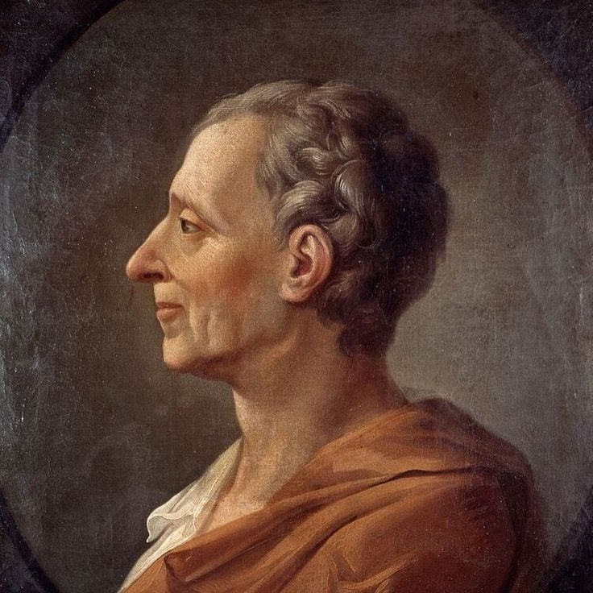

Who Was Montesquieu?
Montesquieu, formally Charles-Louis de Secondat, Baron de La Brède et de Montesquieu (1689–1755), was a French philosopher, political thinker, jurist, and one of the most important figures of the Enlightenment. His philosophy focused especially on government, political liberty, law, institutions, and the conditions that allow societies to preserve freedom.
Montesquieu is best known for his theory of the separation of powers, which argued that political authority should not be concentrated in a single institution or individual. His analysis of legislative, executive, and judicial functions became one of the most influential ideas in modern constitutional and political philosophy.
His most famous work, The Spirit of the Laws, examined how laws and political institutions develop in relation to different societies, histories, economies, religions, and geographical conditions. Montesquieu therefore treated political philosophy as an empirical study of how institutions actually operate rather than as an abstract search for one ideal form of government.
Montesquieu: Quick Facts
- Full name — Charles-Louis de Secondat, Baron de La Brède et de Montesquieu
- Born — 1689
- Died — 1755
- Nationality — French
- Period — Early and High Enlightenment
- Fields — Political philosophy, law, history, sociology, and philosophy of government
- Best known for — Separation of powers and political liberty
- Major work — The Spirit of the Laws
- Other major work — Persian Letters
- Political concerns — Liberty, law, government, institutions, despotism, and constitutionalism
- Major influence — Modern constitutional and political thought
Montesquieu's Early Life and Historical Background

Montesquieu was born in 1689 at the Château de La Brède near Bordeaux, France, into a noble family. His background gave him direct experience of the legal and political institutions of the French monarchy, while his education introduced him to classical philosophy, Roman law, history, and jurisprudence.
He studied law and eventually became associated with the Parlement of Bordeaux, a judicial institution that gave him practical knowledge of law and political administration. This legal background strongly influenced his later philosophy because he approached government through the relationship between laws, institutions, customs, and social conditions.
Montesquieu lived during a period when European thinkers increasingly questioned traditional political authority and sought explanations based on reason, history, and observation. His work contributed to this intellectual transformation while remaining deeply concerned with political stability and the dangers of concentrated power.
Montesquieu and the Enlightenment
Montesquieu was one of the major thinkers of the European Enlightenment, a period associated with reason, critical inquiry, intellectual freedom, and criticism of arbitrary authority. His political philosophy contributed to the Enlightenment project by asking how institutions could protect individuals from political domination.
Unlike philosophers who focused primarily on individual knowledge or metaphysics, Montesquieu concentrated heavily on political institutions and social structures. He investigated how different forms of government operate and why laws must be understood in relation to the circumstances of the societies in which they exist.
Montesquieu's Enlightenment philosophy therefore combined reason with historical and comparative analysis. He believed political thinkers should examine actual societies rather than simply imposing one theoretical model of government upon every nation.
His approach influenced later political philosophy by encouraging thinkers to study constitutional systems, institutional checks, political culture, and the relationship between law and social conditions. His work became particularly important to modern theories of limited government.
Montesquieu's Philosophical Method
Montesquieu's philosophical method was strongly comparative. Rather than examining one political system in isolation, he compared different societies, historical periods, laws, customs, religions, economies, and forms of government. This allowed him to search for patterns explaining why institutions function differently in different circumstances.
His approach was also historical. Montesquieu believed that laws cannot always be understood independently of the society that creates them. Political institutions develop over time and are shaped by historical events, traditions, geographical conditions, and social relationships.
This method made Montesquieu an important predecessor to modern comparative political science and political sociology. His philosophy of government was therefore not simply a theory of what government ought to be; it was also an investigation into how political systems actually work.
What Was Montesquieu's Political Philosophy?
Montesquieu's political philosophy centers on the relationship between law, liberty, institutions, and political power. He was deeply concerned with the possibility that rulers could abuse authority when no institutional limits existed. Political freedom, in his view, required a constitutional structure capable of preventing arbitrary government.
Montesquieu did not argue that political liberty meant complete freedom to do anything a person wishes. Instead, liberty required living under stable laws that protect citizens from arbitrary interference. His conception of political freedom was therefore closely connected to the rule of law and institutional restraint.
A central principle of his political thought was that power should restrain power. When legislative, executive, and judicial authority become concentrated in the same hands, Montesquieu believed political liberty is endangered. Dividing governmental functions can therefore create institutional barriers against abuse.
Montesquieu's philosophy of government consequently became one of the intellectual foundations of modern constitutionalism. His ideas encouraged later political thinkers to consider how institutional design could protect liberty rather than depending entirely upon the personal virtue of rulers.
Montesquieu and The Spirit of the Laws
The Spirit of the Laws, published in 1748, is Montesquieu's most important philosophical and political work. Its full title, De l'esprit des lois, reflects his attempt to investigate the principles and relationships underlying laws rather than simply describing individual legal rules.
The book examines political institutions, forms of government, liberty, law, commerce, religion, customs, climate, and historical circumstances. Montesquieu compares different societies to understand why laws appropriate to one political community may be unsuitable for another.
One of the most influential arguments in The Spirit of the Laws concerns the distribution of political power. Montesquieu analyzed legislative, executive, and judicial functions and argued that liberty is endangered when these powers are concentrated in the same authority.
The work became enormously influential in later constitutional thought. Its analysis of political institutions contributed to debates about limited government, constitutional liberty, and the design of representative political systems.
What Was Montesquieu's Theory of Separation of Powers?
Montesquieu's theory of separation of powers is his most famous contribution to political philosophy. He argued that governmental authority should be divided among different institutions rather than concentrated within one person or body. This separation was intended to reduce the possibility of arbitrary rule.
Montesquieu identified three major governmental functions: legislative, executive, and judicial. The legislative power concerns the creation of laws, the executive power concerns the implementation and administration of public affairs, and the judicial power concerns the interpretation and application of laws in particular cases.
His central concern was not simply administrative efficiency but political liberty. If the same authority creates laws, executes them, and judges violations of them, that authority could potentially use the entire machinery of government against its citizens. Separating these functions creates institutional resistance to such abuse.
Montesquieu's separation of powers should therefore be understood as a theory of constitutional restraint. The purpose of dividing power is to prevent domination and preserve political liberty through a system in which governmental institutions limit one another.
Montesquieu's Three Branches of Government
Legislative Power
The legislative power concerns the authority to make laws. Montesquieu considered legislation an essential component of political government because laws establish the rules under which a society operates. However, legislative authority should not become completely unchecked.
Executive Power
The executive power concerns the implementation of laws and the conduct of public affairs. It includes functions connected with administration, foreign relations, and the practical operation of government. Montesquieu's analysis treated executive authority as distinct from the power that creates laws.
Judicial Power
The judicial power concerns judgment in disputes and the application of laws. Montesquieu regarded judicial independence as important because citizens should not be exposed to a situation in which the same authority that makes and executes laws can arbitrarily determine their guilt.
The three-part framework became highly influential in later constitutional thinking. Although modern constitutional systems do not always reproduce Montesquieu's model exactly, his analysis helped establish the idea that governmental functions should be institutionally differentiated.
Montesquieu and Checks and Balances
Montesquieu's political philosophy is closely associated with the idea that power should restrain power. A constitutional system should not assume that every political institution will always act wisely or virtuously. Instead, institutions should be arranged so that competing authorities can limit one another.
This principle later became closely connected with what modern political systems describe as checks and balances. Although the terminology and institutional arrangements of modern constitutional systems differ from Montesquieu's original analysis, his concern with preventing concentrated authority remains central.
The purpose of institutional checks is not necessarily to make government ineffective. Montesquieu's concern was that political stability requires a balance between effective authority and protection against arbitrary power. Government must have enough power to operate while remaining subject to constitutional limitations.
This principle became especially influential in later discussions of constitutional government. It helped establish the idea that political liberty can be protected not only through declarations of rights but also through the institutional structure of government itself.
Montesquieu's Philosophy of Liberty
Liberty is one of the central concepts in Montesquieu's political philosophy. He did not define political freedom simply as the absence of every restriction. Instead, liberty requires a political environment in which citizens are protected from arbitrary power.
For Montesquieu, laws can actually protect freedom when they prevent rulers from exercising unlimited authority. A citizen living under stable and predictable laws may possess greater political security than someone living under a government where decisions depend entirely upon the personal will of a ruler.
His theory therefore connects liberty with constitutional government, separation of powers, and the rule of law. Political freedom depends upon institutions that make arbitrary domination more difficult.
Montesquieu's understanding of liberty became an important influence on later constitutional thought. His arguments helped shift attention toward the institutional conditions under which freedom can survive rather than treating liberty solely as an abstract personal ideal.
Montesquieu on Political Freedom and Constitutional Government
Montesquieu believed that political freedom depends heavily upon the structure of government. A constitution should not merely establish rulers and procedures; it should create relationships among political institutions that prevent excessive concentration of authority.
Constitutional government, in this sense, is government constrained by established laws and institutional arrangements. Political leaders cannot simply exercise unlimited authority whenever they possess sufficient political power. Their authority must operate within a framework that provides citizens with legal security.
Montesquieu's political philosophy therefore places institutional design at the center of the problem of liberty. Political freedom cannot depend entirely on the goodwill of individual rulers because political circumstances and personalities change over time.
Montesquieu's Classification of Governments
Montesquieu classified governments into three broad forms: republics, monarchies, and despotisms. His classification was based not only on who rules but also on the principles that motivate political behavior within each form.
A republic is a government in which the people, or a portion of them, possess supreme political authority. Montesquieu distinguished democratic republics from aristocratic republics according to whether political power is exercised by the people generally or by a limited portion of the population.
A monarchy is government by a single ruler under established laws. Montesquieu did not simply treat monarchy as equivalent to arbitrary rule. A lawful monarchy can possess institutions and intermediate bodies that limit the ruler's authority.
Despotism, by contrast, is characterized by arbitrary personal rule. Montesquieu regarded despotism as particularly dangerous because political authority becomes concentrated and operates without the institutional restraints associated with lawful government.
Montesquieu on Democracy and Republican Government
Montesquieu regarded republican government as one of the major forms of political organization. In a democratic republic, the people participate in the exercise of political authority, while an aristocratic republic places political power more heavily in the hands of a limited group.
He believed that republics depend upon particular political and moral conditions. Citizens must possess a commitment to the principles that sustain their political institutions. Without such conditions, republican government can become unstable or gradually transform into another form of political rule.
Montesquieu's analysis of democracy was therefore more complicated than simply advocating majority rule. He was interested in the institutional and social conditions necessary for political liberty, stability, and responsible government.
Montesquieu on Monarchy and Despotism
Montesquieu distinguished monarchy from despotism. In a monarchy, the ruler governs through established laws and political institutions. In despotism, authority is concentrated in a ruler whose will operates without meaningful institutional restraint.
This distinction demonstrates why Montesquieu's political philosophy cannot be reduced to a simple preference for one particular form of government. His deeper concern was how political power is organized, limited, and exercised.
Montesquieu regarded despotism as especially dangerous because it destroys political security. When laws depend entirely on the will of a ruler, citizens cannot reliably know the limits of governmental power or protect themselves against arbitrary decisions.
Montesquieu's Theory of Climate and Society
One of the more unusual aspects of Montesquieu's philosophy is his theory of climate. In The Spirit of the Laws, he explored whether geographical and climatic conditions could influence human behavior, social customs, economic practices, and political institutions.
Montesquieu proposed that climate could affect patterns of behavior and social organization, although his arguments reflect the eighteenth-century intellectual environment in which he wrote. His discussion should therefore be understood historically rather than treated as a modern scientific theory of human behavior.
The broader philosophical importance of his climate discussion lies in his attempt to explain political institutions through multiple interacting causes. Laws, customs, economy, geography, religion, and history could all contribute to the character of a society.
Montesquieu on Laws and Social Institutions
Montesquieu believed that laws should be understood in relation to the societies in which they operate. A legal system is not simply a collection of isolated rules; it forms part of a larger relationship among political institutions, customs, economic conditions, religion, geography, and historical development.
This approach explains why Montesquieu rejected simplistic attempts to impose identical political institutions upon every society. Laws that function effectively under one set of circumstances may produce different results under another.
His philosophy of law therefore emphasized relationships and context. Understanding legislation requires understanding the political and social environment that gives those laws their practical meaning.
This contextual approach became important to later historical and comparative approaches to law and political institutions. Montesquieu encouraged philosophers to study laws as parts of living societies rather than treating them as purely abstract principles.
Montesquieu and Natural Law
Montesquieu's discussion of law begins with the broader idea that laws can be understood as relationships arising from the nature of things. He distinguished general principles from the particular laws created by human political communities.
His approach differed from purely abstract versions of natural law because he placed considerable emphasis on historical and social circumstances. Human laws develop within particular societies and therefore cannot always be understood independently of those circumstances.
Montesquieu's philosophy of law consequently combines universal questions about justice and political order with empirical questions about how laws operate within different communities.
Montesquieu on Religion and Religious Tolerance
Religion was an important subject in Montesquieu's political and social analysis. He examined the relationship between religious beliefs, laws, customs, and political institutions rather than treating religion as completely separate from public life.
Montesquieu was critical of religious persecution and recognized that political attempts to impose uniformity could produce serious social conflict. His writings contributed to the broader Enlightenment discussion of religious tolerance and limits on coercive authority.
His approach was particularly significant because he connected tolerance with political stability and social diversity. A government that recognizes differences within society may avoid conflicts caused by excessive attempts to control belief.
Montesquieu on War, Peace, and International Relations
Montesquieu also examined war and relations among political communities. His political philosophy recognized that governments operate not only within their own societies but also within a wider international environment.
He criticized unnecessary aggression and examined how political institutions and economic relationships influence relations between states. His broader analysis suggested that political systems cannot be understood without considering their interactions with other societies.
These arguments contributed to the Enlightenment tradition of thinking about international order, peace, commerce, and the relationship between domestic political institutions and foreign policy.
Montesquieu and Commerce
Commerce also played an important role in Montesquieu's political thought. He examined how trade influences relationships among individuals and states and considered the ways economic interaction could affect political behavior.
Montesquieu recognized that commercial societies could develop habits different from societies dominated by military conquest or arbitrary political authority. Commercial interaction can encourage regular relationships based on exchange and mutual interest.
His analysis of commerce became part of a broader Enlightenment interest in the relationship between economic activity, political institutions, social customs, and peace.
Major Works of Montesquieu
Montesquieu wrote across philosophy, political theory, history, literature, and social analysis. His works demonstrate his interest in understanding political institutions through historical comparison, observation, and philosophical reasoning.
- Persian Letters — A satirical work that uses fictional Persian travelers to examine French society, religion, politics, and cultural assumptions.
- Considerations on the Causes of the Greatness of the Romans and Their Decline — A historical and political analysis of the rise and decline of Roman power.
- The Spirit of the Laws — Montesquieu's major work on laws, government, political liberty, separation of powers, society, commerce, religion, and historical conditions.
- Defence of The Spirit of the Laws — Montesquieu's response to criticisms of his major political and philosophical work.
Montesquieu's Main Philosophical and Political Ideas
1. Separation of Powers
Montesquieu argued that legislative, executive, and judicial powers should not become concentrated within the same authority. Dividing governmental functions helps protect political liberty and reduces the possibility of arbitrary rule.
2. Political Liberty
Political liberty requires security from arbitrary power. For Montesquieu, stable laws and constitutional institutions can provide citizens with greater freedom than government based solely on the personal will of rulers.
3. Rule of Law
Government should operate through established laws rather than unrestricted personal authority. Law provides a framework within which political power can be exercised and limited.
4. Comparative Political Analysis
Montesquieu compared different governments and societies in order to understand how political institutions develop. He emphasized that laws must be considered in relation to history, customs, geography, religion, and economic conditions.
5. Opposition to Despotism
Montesquieu regarded arbitrary concentrated power as one of the greatest threats to political freedom. His institutional theory was designed in large part to make such domination more difficult.
Montesquieu's Influence on the American Constitution
Montesquieu became highly influential in eighteenth-century discussions of constitutional government, particularly among American political thinkers. His analysis of separation of powers provided an important intellectual resource for those concerned with preventing excessive concentration of governmental authority.
The United States Constitution established separate legislative, executive, and judicial branches, although the American system developed its own institutional arrangements rather than simply copying Montesquieu's model. The resulting system also incorporated mechanisms through which the branches could limit one another.
Montesquieu's influence can therefore be seen in the broader constitutional principle that political power should be divided and constrained. His ideas became part of the intellectual background against which American constitutional government was designed.
His influence on American political thought helped make the separation of powers one of the most recognizable concepts in modern constitutional theory. The relationship between Montesquieu and the American Constitution remains an important topic in the history of political philosophy.
Montesquieu's Influence on Modern Democracy and Political Philosophy
Montesquieu's political thought continues to influence modern constitutional democracies because the problem he examined remains fundamental: how can governments possess enough authority to function while preventing that authority from becoming arbitrary?
His theory of separated governmental powers influenced constitutional discussions across Europe, North America, and other parts of the modern political world. The specific institutions vary between countries, but the principle of limiting concentrated political power remains widely important.
Montesquieu also contributed to the development of comparative political analysis. His attempt to explain political institutions through relationships among law, history, society, economy, religion, and geography anticipated later approaches in political science and sociology.
His legacy therefore extends beyond the separation of powers. Montesquieu helped establish a broader tradition of studying government as an institutional and social phenomenon rather than simply as an expression of political authority.
Montesquieu's Legacy and Criticisms
Montesquieu's influence on political philosophy has been enormous, particularly in discussions of constitutional government, liberty, institutional checks, and the separation of powers. His work became a central reference point for later thinkers concerned with limiting arbitrary political authority.
At the same time, modern scholars have criticized or questioned some aspects of his thought. His climate theory, for example, reflects assumptions of eighteenth-century European intellectual culture that do not correspond to contemporary scientific understandings of human societies.
His descriptions of different civilizations and political systems also contain historical limitations and assumptions that require careful interpretation. Montesquieu should therefore be read within the context of his period rather than treated as a completely contemporary political theorist.
Nevertheless, his central insight concerning the institutional limitation of political power remains one of the most influential contributions to modern political philosophy. His work continues to shape discussions of constitutionalism, liberty, law, and government.
Frequently Asked Questions About Montesquieu
Who was Montesquieu?
Montesquieu was an eighteenth-century French philosopher, political thinker, jurist, and major figure of the Enlightenment. He is best known for his analysis of government, political liberty, law, and separation of powers.
What was Montesquieu famous for?
Montesquieu is most famous for his theory of the separation of powers. He argued that legislative, executive, and judicial powers should not become concentrated within the same authority because concentrated political power can threaten liberty.
What was Montesquieu's philosophy?
Montesquieu's philosophy focused primarily on political institutions, law, liberty, government, and the conditions that prevent arbitrary rule. His political thought emphasized constitutional limits and the relationship between different forms of government and social circumstances.
What is Montesquieu's separation of powers?
Montesquieu's separation of powers is the principle that governmental authority should be divided among legislative, executive, and judicial functions. The purpose is to prevent excessive concentration of political power and protect political liberty.
What are the three branches of government according to Montesquieu?
Montesquieu identified legislative, executive, and judicial powers as distinct governmental functions. Modern constitutional systems often describe these as the legislative, executive, and judicial branches, although their precise institutional arrangements differ.
Did Montesquieu invent separation of powers?
Montesquieu did not create the idea of dividing governmental authority from nothing, since earlier political thinkers had discussed forms of mixed or divided government. His major contribution was developing a systematic analysis of separated governmental functions and connecting institutional division directly with political liberty.
What did Montesquieu mean by political liberty?
Montesquieu understood political liberty primarily as security from arbitrary government. Liberty requires laws and institutions that prevent rulers from exercising unrestricted personal authority over citizens.
What is The Spirit of the Laws by Montesquieu?
The Spirit of the Laws, published in 1748, is Montesquieu's major work on law, government, political liberty, separation of powers, society, commerce, religion, climate, and history. It is one of the foundational texts of modern political philosophy.
How did Montesquieu influence democracy?
Montesquieu influenced modern democratic and constitutional thought by emphasizing divided governmental authority, institutional restraints, political liberty, and the rule of law. His ideas became particularly influential in constitutional debates in the eighteenth century.
How did Montesquieu influence the American Constitution?
Montesquieu's writings provided an important intellectual influence on American constitutional thought, especially concerning the separation of governmental powers. The United States Constitution established separate legislative, executive, and judicial branches with mechanisms that allow each part of government to constrain others.
What did Montesquieu believe about government?
Montesquieu believed that different forms of government operate according to different principles and social conditions. He was particularly concerned with preventing arbitrary power and argued that constitutional institutions could help preserve political liberty.
What did Montesquieu think about despotism?
Montesquieu regarded despotism as a form of government in which political authority is concentrated and exercised according to the ruler's will rather than meaningful institutional restraints. He considered arbitrary power a major threat to political freedom.
What was Montesquieu's theory of climate?
Montesquieu argued that climate and geographical conditions could influence human behavior, customs, laws, and political institutions. His climate theory reflects eighteenth-century thought and should be interpreted historically rather than as a modern scientific theory.
Was Montesquieu an Enlightenment philosopher?
Yes. Montesquieu was one of the major philosophers of the European Enlightenment. His emphasis on reason, political liberty, historical comparison, institutional limits, and criticism of arbitrary authority made him an important Enlightenment thinker.
What were Montesquieu's major works?
Montesquieu's major works include Persian Letters, Considerations on the Causes of the Greatness of the Romans and Their Decline, and The Spirit of the Laws. The latter is his most influential work in political philosophy.
Why is Montesquieu important in political philosophy?
Montesquieu is important because he developed a powerful theory of constitutional government in which political liberty depends partly upon the institutional distribution and limitation of power. His analysis remains influential in modern political and constitutional thought.
Related Enlightenment Philosophers
Explore other major thinkers who shaped modern philosophy, Enlightenment political thought, theories of knowledge, liberty, government, and constitutionalism.
Related Areas of Philosophy
Montesquieu's philosophy connects political philosophy with ethics, law, history, liberty, government, social philosophy, Enlightenment thought, and the study of political institutions.
Why Montesquieu Still Matters
Montesquieu remains one of the most important figures in the history of political philosophy because he transformed the question of political liberty into a question of institutional design. Instead of relying entirely upon the character of rulers, he asked how political systems could be structured so that power itself would be limited.
His theory of separation of powers became a foundational idea in modern constitutional thought. By distinguishing legislative, executive, and judicial functions and emphasizing institutional restraints, Montesquieu provided one of the most influential philosophical arguments against concentrated political authority.
His broader philosophy was equally significant. Through The Spirit of the Laws, Montesquieu examined the relationship among law, history, society, commerce, religion, geography, and forms of government. His comparative approach helped establish a lasting tradition of studying political institutions within their social and historical contexts.
Understanding Montesquieu therefore helps explain the intellectual development of modern constitutionalism, political liberty, and democratic government. His central question remains relevant today: how can political power be made effective enough to govern while being limited enough to protect freedom?
Explore Great Philosophers